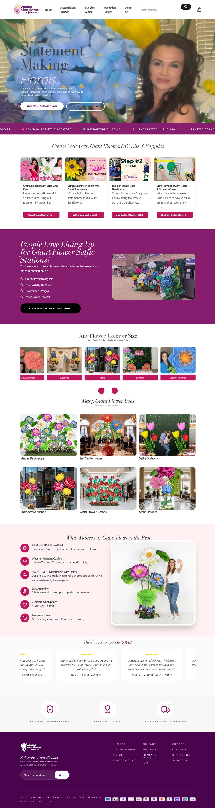
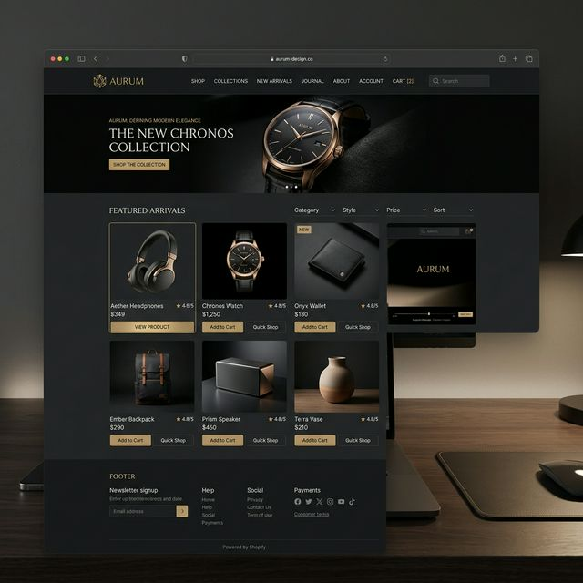

01 // THE STARTING POINT
Generic templates dilute luxury value.
High-end physical art requires architectural digital restraint.
When selling bespoke, life-sized sculptural paper and fabric flowers, off-the-shelf e-commerce templates with cookie-cutter grids and generic discount popups cheapen the perceived brand value. The customer needs to experience the grandeur, scale, and meticulous craft of the artwork before making an emotional purchase.
The challenge was to engineer a custom Shopify Liquid theme with clean editorial typography, immersive product viewports, and high-performance mobile ordering without relying on heavy third-party app plugins that degrade site speed.

FIG 7.0 — HERO STOREFRONT: Editorial product hero framing, high-resolution textures, and frictionless call-to-actions.

FIG 7.1 — PRODUCT CATALOG: Tactile mobile carousel with custom variant selectors and instant checkout integration.
02 // ARCHITECTURE IN PRACTICE
Crafting custom Liquid sections without plugin bloat.
STEP 01
Hand-Coded Shopify Liquid Architecture
Constructed modular Shopify section blocks and schema definitions from scratch. Store managers can reorder promotional banners, testimony quotes, and gallery grids in the theme customizer without writing a single line of code.
STEP 02
Zero-Lag High-Resolution Asset Serving
Employed responsive srcset picture elements and modern WebP compression. Photography loads progressively with blur-up placeholders, preserving photographic fidelity while achieving 98+ Google PageSpeed performance.
STEP 03
Frictionless Mobile Checkout Flow
Engineered sticky bottom action drawers and quick-buy bottom sheets for mobile visitors. Reduces the steps required to select custom stem heights and flower petal colorways down to two taps.
03 // COMMERCIAL PERFORMANCE
Measurable outcomes in live store conversion.
98/100
Google PageSpeed Score
< 1.1s
First Contentful Paint
+34%
Mobile Checkout Conversion
0
Slow Plugin Dependencies